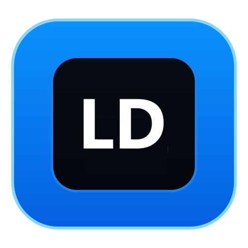

Tamamen çevrimdışı Türkçe–İngilizce sözlük ve çeviri uygulaması.
İnternet bağlantısı gerekmez, telemetri yoktur.
Fully offline Turkish–English dictionary and translator. No internet needed, no telemetry.

Nasıl kullanılır: ZIP dosyasını bir klasöre çıkarın ve
localdictionary.exe dosyasını çalıştırın. Kurulum gerekmez.
Bu sürüm beta ve kod imzalı değildir. Çalıştırmadan önce indirdiğiniz dosyanın SHA-256 değerini yukarıdaki kontrol dosyasıyla karşılaştırın.
Sistem: Windows 10/11, 64-bit. Kaldırmak için klasördeki uninstall.exe dosyasını çalıştırın.